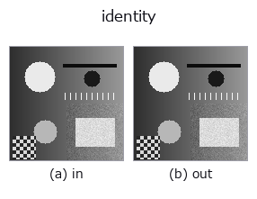

misc op• Data kinds: any → any
• Call: fullseye.apply(img, "identity", a=0.5, b=0.5) (the 2-D model is one image plus two scalar knobs a,b∈[0,1])
• HALCON equivalent: copy_image (the HALCON reference is a useful guide to its meaning and parameters)

*The figure is the actual output on a synthetic 128×128 input. Left: input, right: output. Point clouds are drawn as a top-down scatter (brightness = z), 1-D series as a line plot, volumes as the maximum-intensity projection along z, videos as the middle frame, complex images as magnitude; return values that are not pictures are shown as the values themselves.*
*Knob a does not change the output (measured: identical at 0.1 / 0.5 / 0.9).*
*Knob b does not change the output (measured: identical at 0.1 / 0.5 / 0.9).*
On other images (synthetic scene / photo / coins. Top row: inputs, bottom row: their outputs. Knobs at default):
▸ identity: other inputs (docs site)
*The 4th column is a colour (H,W,3) input. This op handles colour without crossing channels (it does not convolve the colour channel as a third spatial axis).*
Identity mapping. Mapped to HALCON's copy_image (Copy an image and allocate new memory for it.), but unlike copy_image, which allocates new memory and duplicates the image, this implementation simply returns the input array as-is (it does not duplicate it).
a, b are unused. This op alone gets the special treatment of having the sort ANY (it matches image, region and feature input alike); it is used to place a "do nothing" slot without changing the types in the pipeline (e.g. when evolution only wants to fill up the number of slots). Because it returns the input as is instead of rebuilding the value, note that if the caller modifies the return value, the input array changes along with it.
• Sample-data catalog (download URLs / licences) — 2-D uses skimage.data (BSD/public domain) plus synthetic images; 3-D lists download URLs for real data sources (Stanford, PDS, …).
• Operator provenance and references — the sources of the research/methods this op family came from.
The program below has been verified to run (same input as the figure). In Studio's help this block becomes buttons that load and run it on the spot.
identity 0.50 0.50
▸ Load this pipeline · Load & run
• (none yet)
any as input)gaussian · mean_box · bilateral · unsharp · median · min_filter · max_filter · percentile
misc)—
*Provenance: ops.py — 2D operator registry. This per-op note is generated by tools/opdocs.py md (do not hand-edit).*
© 2026 Kazufumi Furuse — Fullseye operator documentation. Licensed under Apache-2.0.